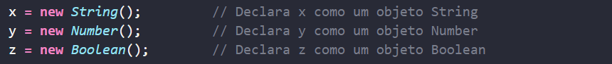

Na vida real, um carro é um objeto .
Um carro tem propriedades como peso e cor, e métodos como iniciar e parar:
| Objeto | Propriedades | Métodos |
| car.name = Fiat | car.start() | |
| car.model = 500 | car.drive() | |
| car.weight = 850kg | car.brake() | |
| car.color = white | car.stop() |
Todos os carros têm as mesmas propriedades , mas os valores das propriedades diferem de carro para carro.
Todos os carros possuem os mesmos métodos , mas os métodos são executados em momentos diferentes .
Este código atribui um valor simples (Fiat) a uma variável chamada car:
Objetos também são variáveis. Mas os objetos podem conter muitos valores.
Este código atribui muitos valores (Fiat, 500, branco) a uma variável chamada carro:
Os valores são escritos como pares nome:valor (nome e valor separados por dois pontos).
É uma prática comum declarar objetos com a palavra-chave const .
Você define (e cria) um objeto JavaScript com um objeto literal:
Espaços e quebras de linha não são importantes. Uma definição de objeto pode abranger várias linhas:
Os pares nome:valores em objetos JavaScript são chamados de propriedades :
| Propriedade | Valor da propriedade |
| Primeiro nome | Jonas |
| Sobrenome | Santos |
| Idade | 35 |
| Cor dos olhos | Azul |
Um método é uma função armazenada como uma propriedade.
No exemplo acima, thisrefere-se ao objeto person3 :
this.Nome significa a propriedade Nome de person3 .
this.Sobrenome significa a propriedade Sobrenome de person3 .
Em JavaScript, a this palavra-chave refere-se a um objeto .
Qual objeto depende de como this está sendo invocado (usado ou chamado).
A this palavra-chave refere-se a diferentes objetos dependendo de como é usada:
| Em um método de objeto, this refere-se ao objeto . |
| Sozinho, this refere-se ao objeto global . |
| Em uma função, this refere-se ao objeto global . |
| Em uma função, no modo estrito, this é undefined. |
| Em um evento, this refere-se ao elemento que recebeu o evento. |
| Métodos como call(), apply() e bind() podem se referir this a qualquer objeto . |
this não é uma variável. É uma palavra-chave. Você não pode alterar o valor de this.
Numa definição de função, this refere-se ao “proprietário” da função.
No exemplo acima, this é o objeto pessoa que “possui” a fullName função.
Em outras palavras, this.firstName significa a firstName propriedade deste objeto .
Você acessa um método de objeto com a seguinte sintaxe:
objectName.methodName()
Um método de objeto é uma definição de função, armazenada como um valor de propriedade.
Se você acessar um método sem os parênteses (), ele retornará a definição da função :
Se aceder a um método de objeto sem (), este devolverá a definição da função:
Quando uma variável JavaScript é declarada com a palavra-chave " new", a variável é criada como um objeto:
Evite String, Number, e Boolean objetos. Eles complicam seu código e diminuem a velocidade de execução.